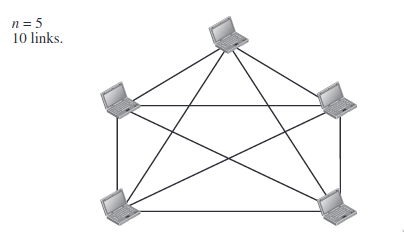
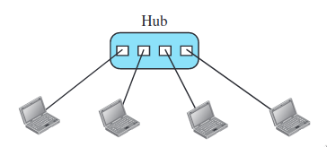
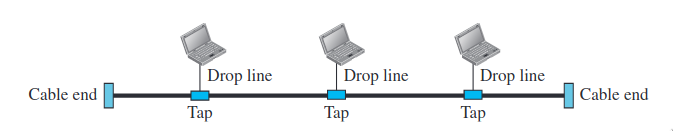
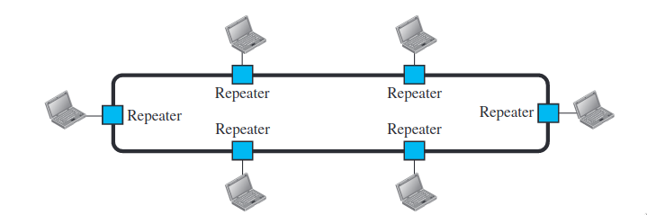
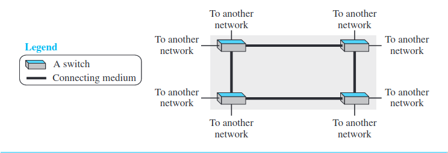

Data Communications & Networks
Table of Contents
Data Communications
- Data communications are the exchange of data between two devices via some form of transmission medium such as a wire cable.
- The effectiveness of a data communications system depends on four fundamental characteristics:
- Delivery - The system must deliver data to the correct destination.
- Accuracy - The system must deliver the data accurately. Data that have been altered in transmission and left uncorrected are unusable.
- Timeliness - The system must deliver data in a timely manner. Data delivered late are useless.
- Jitter - Jitter refers to the variation in the packet arrival time. It is the uneven delay in the delivery of audio or video packets.
Components
- A data communications system has five components.
- Message - The data to be transmitted.
- Sender - The one who sends.
- Receiver - The one who receives.
- Transmission medium - Through which the data is sent.
- Protocol - The set of rules followed during the transmission of data.
Data Representation
- Information today comes in different forms such as:
- Text
- Numbers
- Images
- Audio
- Video
Data Flow
Communication between two devices can be simplex, half-duplex, or full-duplex.

Simplex
- In simplex mode, the communication is unidirectional, as on a one-way street. Only one of the two devices on a link can transmit; the other can only receive.
- Example - Keyboard takes only input and monitor gives only output.
Half-duplex
- In half-duplex mode, each station can both transmit and receive, but not at the same time.
- Example - Walkie-talkies
Full-duplex
- In full-duplex mode (also called duplex), both stations can transmit and receive simultaneously
- Example - Using phone to talk to each other
Networks
- A network is the interconnection of a set of devices capable of communication.
- Host is the device ex: laptop, mobile.
- Connecting device is something that connects device to other networks ex: router, switches.
Network Criteria
- A network must be able to meet a certain number of criteria. The most important of these are:
- Performance
- Reliability
- Security
Physical Structures
Before discussing networks, we need to define some network attributes.
Types of Connections
There are two possible types of connections: point-to-point and multipoint.

Physical Topology
- The term physical topology refers to the way in which a network is laid out physically.
- The topology of a network is the geometric representation of the relationship of all the links and linking devices (usually called nodes) to one another.
- There are four basic topologies possible: mesh, star, bus and ring.
Mesh Topology
- In a mesh topology, every device has a dedicated point-to-point link to every other device.
- Total number of connections is n(n - 1)/2
- Advantages
- Use of dedicated links guarantees that each connection can carry its own data load, thus eliminating the traffic problems
- If one link becomes unusable, it does not incapacitate the entire system
- There is the advantage of privacy or security.
- Disadvantages
- Because every device must be connected to every other device, installation and reconnection are difficult
- The sheer bulk of the wiring can be greater than the available spac
- The hardware required to connect each link (I/O ports and cable) can be prohibitively expensive
- One practical example of a mesh topology is the connection of telephone regional offices in which each regional office needs to be connected to every other regional office.

Star Topology
- In a star topology, each device has a dedicated point-to-point link only to a central controller, usually called a hub. The devices are not directly linked to one another

- Advantages
- A star topology is less expensive than a mesh topology.
- less cabling than mesh topology.
- easy to configure.
- Robustness - If one link fails, only that link is affected.
- Disadvantages
- If the hub goes down the whole system goes down.
- More cabling required than the bus and ring topologies
- The star topology is used in local-area network.
Bus Topology
- A bus topology is a multipoint connection. One long cable acts as a backbone to link all the devices in a network. Nodes are connected to the bus cable by drop lines and tap. 
- Advantages
- ease of installation.
- less cabling than the mesh and topologies
- Disadvantages
- Difficult reconnection.
- Signal reflection at the taps can cause degradation in quality.
- A fault or break in the bus cable stops all transmission.
Ring Topology
- In a ring topology, each device has a dedicated point-to-point connection with only the two devices on either side of it. 
- Advantages
- Relatively easy to install and reconfigure
- To add or delete a device requires changing only two connections.
- Fault isolation is simplified
- Disadvantages
- Unidirectional traffic can be a disadvantage.
- Break in the ring can disable the whole system.
Network Types
- They are two main types of networks, they are LAN and WAN.
- LAN ( Local Area Network )
- A local area network (LAN) is usually privately owned and connects some hosts in a single office, building, or campus.
- WAN ( Wide Area Network )
- A wide area network (WAN) is also an interconnection of devices capable of communication on a wider geographical span, spanning a town, a state, a country, or even the world.
- Point-to-Point WAN
A point-to-point WAN is a network that connects two communicating devices through a transmission media (cable or air)

- Switched WAN
A switched WAN is a network with more than two ends, We can say that a switched WAN is a combination of several point-to-point WANs that are connected by switches. 
Osi and TCI/IP model
What is OSI model?
- The OSI stands for Open System Interconnection, which was developed in 1980s. It is a conceptual model used for network communication. It is not implemented entirely, but it is still referenced today. This OSI model consists of seven layers, they are :-
- Application
- Presentation
- Session
- Transport
- Networks
- Data link
- Physical
- The data moves down the OSI model, and each layer adds additional information. The data moves down until it reaches the last layer of the OSI model. When the data is received at the last layer of the OSI model, then the data is transmitted over the network. Once the data is reached on the other side, then the process will get reversed.
What is TCP/IP model?
- The TCP model stands for Transmission Control Protocol, whereas IP stands for Internet Protocol. A number of protocols that make the internet possibly comes under the TCP/IP model. Nowadays, we do not hear the name of the TCP/IP model much, we generally hear the name of the IPv4 or IPv6, but it is still valid. This model consists of 4 layers. They are :-
- Application
- Transport
- Network
- Internet Access